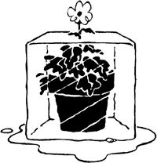
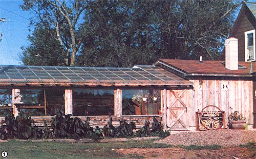
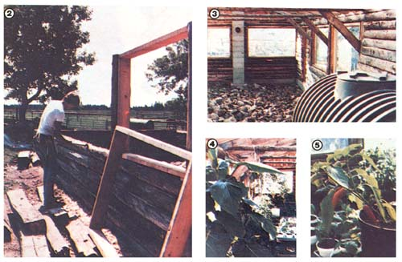

We created a greenhouse from discarded logs, rough-cut lumber, and a few panes of glass!
Two winters ago, my husband Bill suffered a heart. attack. Fortunately, it wasn't too serious . . . but, while recovering, he did have to slow down the pace of his life for a while. Now Bill's a very hardworking man (he's a dedicated veterinarian, and we operate a 200 acre farm . . . with 30 dairy cows, 22 horses, and sundry other livestock, plus a huge outdoor garden). So I knew it wouldn't be easy for him to reduce his activities and keep from going crazy from idleness.
PLAN "A"
To preserve Bill's (and my) sanity, then, we constructed a temporary 10' X 16' solar greenhouse on the south wall of our home. We jokingly referred to this structure-built from a double layer of plastic, some poles, and salvaged grain doors (for bench tops)-as the "Coronary Care Unit." But don't laugh: The little addition did the trick! Our garden house kept my husband cheerfully occupied tending potted plants indoors . . . instead of out tackling farm chores in below-zero weather. In fact, we found our new space to be so cheerful that we even placed a table and chairs in one corner of it, so we could enjoy reading or lunching amid green and growing things (with their wonderful humid smell)!
Our low-cost greenhouse warmed up to the 70's during the day (not bad for northern Minnesota, where the daytime high is often below zero) . . . and, with the help of a kerosene heater, kept plants in the 50's at night (even when outside temperatures plummeted to -50°F). The only problems with the little makeshift structure were that it was temporary and cramped. What we really needed was an honest-to-goodness permanent (and spacious!) greenhouse. However, coming up with a design for one that would complement the rustic character of our 100year-old log home had us stumped.
FORTUNE SMILES
Then one day, after my husband had gotten back on his feet and was returning home from a vet call, he spied a huge pile of spruce logs left from the demolition of a neighbor's two story log house. The poles were long and clean and looked to be in perfect condition, so Bill asked the owner what he planned to do with the heap . . . and was told it was going to be advertised as firewood. Firewood, my eye! Those logs were a perfect match for our house. So the next day -with the help of two strong-muscled carpenter friends-we rushed right over and collected our new building supplies!
Within two weeks, we had the cement foundation poured and the first five courses of logs sized and set on top of it. Gene, one of our woodworking allies, located some rejected 4' X 8' triple-insulated glass panes for only $40 apiece. We used 2 X 6 rough cut lumber to frame these in place . . . but before we mounted the front two panes, we pitched in a hefty supply of large rocks (hauled over from our hayfield stockpile), along with a truckload of smooth, smaller stones. We figured those rocks, together with a 1,000-gallon plastic septic tank (half full of water), would provide us with adequate heat storage.
Next, we put in the rafters (also made from rough-cut planks) and, mindful of our heavy Minnesota snows, made sure to give the roof a steep slant. After the rafters were nailed in place, we added Dillon roofing. This cost us $800, which made it the most expensive component on our greenhouse. However, we figured the glazing's durability and light transmission made it worth every penny!
HEATING SYSTEM
The finished greenhouse runs north to south and is built of the south side of our house. In this location, it's protected from the extreme north wind and receives sunlight all winter. Still, we knew we wouldn't be able to heat our new plant room entirely with solar energy, so we commissioned a local blacksmith to turn a cast-of fuel oil barrel into a wood stove that could handle five foot logs. Since we knew the large but thin walled tank would eventually burn out, we asked the smith to make removable fittings we could later take of and attach to the next tank. But it's been two years since we had "Big Daddy" installed, and-so far-the heater is showing no signs of wear. (Of course, we never let the stove overheat and always keep at least four inches of ashes in its bottom.) At this rate, the low-cost heater should last at least five years!
Above Big Daddy we've mounted a salvaged squirrel cage blower. The fan circulates air around the greenhouse, and, when we open the patio door that leads to the main house, it also helps move warm air into our home. The whole setup is so efficient that, during the day (even in sub-zero weather), we can often let our fires die down, and warm the entire building with the heat gathered by the greenhouse!
During the coldest months, we close the patio door an hour before sunset to give the rock bed and septic tank a chance to warm up. Then, at about 7:00 PM, we stoke up Big Daddy and bed it down for the night with a couple of five-foot logs. This usually keeps the temperature in the greenhouse at a comfortable 60°F. Even on really cold nights, when the outside temperature drops to -30°F or lower, the air inside our addition still remains above freezing . . . at a livable 45 °F.
BRIGHT SPOT
We've been amazed at how easy it is to grow plants in our greenhouse. (Imagine a garden with no weeds!) Our snow peas last for months, producing far more fruit than their "outdoor kin". We also grow out-of-season green peppers, chili peppers, tomatoes, string beans, cukes, salad fixings, bush melons, herbs, and a few oddball trees such as South American tomato, fig, papaya, banana, and dwarf orange. Our flower array includes gloxinias, begonias, daffodils, tulips, geraniums, snapdragons, flowering cacti, and more.
During our first indoor growing season back when we used the temporary greenhouse-we got carried away at planting time. As a result, we produced far more seedlings than we could ever use, so we sold the surplus vegetable and flower starts to family and friends. In fact, business was so good that year that we've continued to expand our market ever since.
However, my husband and I still have a farm to run, and we don't plan (now or ever) to make our greenhouse market a huge commercial venture. To do that would take too much time away from other projects . . . and we can stretch 24 hours just so far!
We're content to sell enough plants to cover our greenhouse expenses, to enjoy tending greenery during our six-month snow sea son, and to never again have to put up with a limp pea or a tasteless tomato. In short, we've found that there's really nothing more therapeutic-or simply pleasurable than enjoying springtime . . . especially' when it's 30 below outside!
|
[1] Voila! Our finished greenhouse! |
 [2] With the help of friends, we built our solar addition in a matter of weeks. [3] A rock ""carpet""serves as a solar collector. [4] Ornamentals and . . . [5] green peppers are two of the plants and vegetables we now grow year round! |
 |
|
 |
|
|